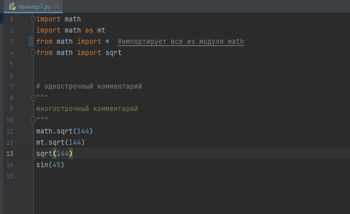
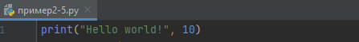
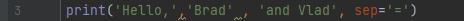
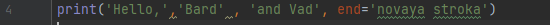

Введение
Эта издание является учебным пособием для начинающих. Благодаря ему вы познакомитесь с языком программирования Python, а именно его третьей версией. Мы пройдём путь от простейших линейных алгоритмов до сложнейших конструкций с бесконечными циклами и фрактальным вызовом функций. Вы можете обучаться с помощью этого издания дома или на дополнительных занятиях в школе, при наличии компьютера. Для программирования вам понадобиться прежде всего установить сам Python с официального сайта, код можно писать в любом редакторе текста, но удобнее всего это делать в специализированном редакторе, таком, как например PyCharm. Чтобы скачать PyCharm, перейдите по ссылке и скачайте любую версию:
https://www.jetbrains.com/ru-ru/pycharm/download/#section=windows
Все примеры нужно запускать самому для полного понимания. Их можно скачать и запустить: https://github.com/coderNamedPaul/science-project/tree/main/наши%20примеры
Условные обозначения:
S – всегда переменная типа string
Глава I. Основы работы яп Python. Переменные, их типы, и операции над ними.
Параграф 1. Основы.
Все яп переводятся в бинарный код для обработки процессором, этим занимается компилятор. Но “компилятор” в Python называется интерпретатор, он переводит python код в байт код. Это позволяет сильно упростить язык. Но не думайте, что у Python нет минусов, он работает заметно медленнее других яп.
В Python существуют различные библиотеки, расширяющие возможности программирования. Чтобы ими пользоваться нужно прописать команду import.

Чтобы вывести информацию в консоль, в Python используется команда print(). Если вы хотите вывести число, просто напишите его в скобках, если же вы хотите вывести строку, то она должна быть заключена в любые кавычки, чтобы вывести переменную, нужно просто ввести её название, если нужно вывести несколько значений подряд, они записываются через запятую.

Текст можно выводить форматировано, используя обратный слеш и некоторые буквы английского алфавита
\\ - так можно вывести \
\’ или \” – выводит кавычки
\n – выводит следующий далее текст с новой строки
\t – добавит табуляцию
Python значения, написанные через “,”, выводит через пробел, пробел можно заменить чем угодно, с помощью sep.

Также у функции print есть параметр end, по умолчанию он равен “\n”.
